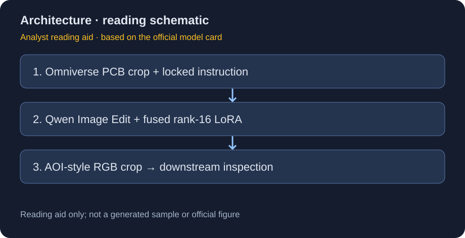
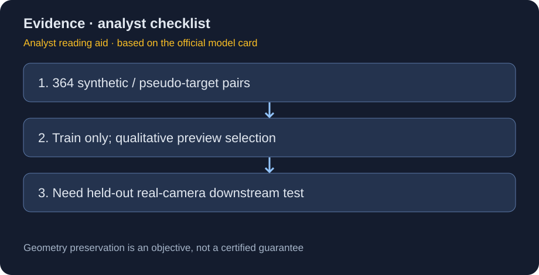

CDF Sim2Real Solderlight：364 对伪目标驱动的 PCB 风格迁移
一手资料、日期与分类
🤗 HF Model Card 写明 2026-10-20 GitHub 发布，v1.0.0。卡所指 NVIDIA/paidf-augmentation 当前重定向到 NVIDIA/cdf-augmentation。保存原始卡 src/hf_model_card.md 与官方 README，不把上层流水线说明当成本 checkpoint 的独立实验报告。
该模型归 NVIDIA 专项支线，底座 Qwen-Image-Edit；OpenMDW-1.1 为本发布条款，上游组件的 Apache-2.0 仍应分别核对。整套 diffusers pipeline 存在 model/；本轮只抓文档，未下载权重、加载 pipeline 或运行示例。
解决的问题：把渲染输入约束成特定工业照明风格
Omniverse 渲染可以获得几何、部件与标签，但材质 / 光照分布和真实 AOI 输入不同。模型将单个 PCB 元件 crop 转成克制的斜射焊锡照明风格：只在已有焊盘、引脚、金属端帽等处产生橙红与钴蓝高光，塑料 / 陶瓷主体保持暗、平、非自发光；不能新增文字、logo、边框或装饰。
这些是训练指令与目标约束，不等于模型输出已被数学保证。它是数据翻译步骤；最终 pass/fail 必须由下游检测系统和人工审核承担。

结构、参数与训练细节
| 项目 | 官方卡披露 |
|---|---|
| 底座 | Qwen/Qwen-Image-Edit 图像编辑 diffusion / flow-matching pipeline |
| 语言 / 视觉条件 | Qwen2.5-VL；Qwen-Image VAE |
| 训练模块 | transformer attention、cross-attention、img_mlp / txt_mlp 投影 |
| LoRA | rank16、alpha16、dropout0；约170M训练参数 |
| 优化设置 | 3000步、batch1、LR1e−4、seed0、bf16、gradient checkpointing |
| 调度 | Qwen-Image 的 resolution-aware time-shift |
| 发布方式 | scale1.0 融合到 bf16 transformer；推理无需另加 adapter 文件 |
| 卡中总参数口径 | 约20B；与170M训练模块不要相加当成新增容量 |
model/ 包含 transformer、text_encoder、vae、tokenizer、processor、scheduler 与 model_index.json。LoRA训练后融合发布，与 AnomalyGen 只发适配模块的打包方式不同。部署规划不能根据“LoRA170M”就假设只需加载170M。
数据：真的是 real ground truth 吗？
训练集合为 364 对按文件名匹配的 Omniverse synthetic crop 与 Qwen-Image-Edit 生成的 solder-light pseudo-target；收集于2026年9–10月。九张视觉不合适的样本被排除。固定英文指令是全数据共享条件，不是364个自由编辑任务。
未打包独立 validation / test split；评估是 side-by-side preview 与内部目视审核。clean目标面积262144像素，对应约512×512，即 0.262MP。原卡同一段把它称为“~0.5MP”，这是算术口径不一致；这里保留原数值并指出差异，不照抄错误。其他分辨率虽底座接受，但未由这套微调验证。

使用契约与安全解释
用户输入单张与训练分布相近的 Omniverse RGB crop；训练英文 prompt 被固定，不开放任意自由文本。输出 PNG RGB，预处理后分辨率对应训练面积。固定 prompt 有助于减少接口自由度，但不能把卡中的“cannot be a vector for misuse”理解为完整安全证明；图像输入、系统接入与依赖仍可有风险。
“保持几何、标记、外形”是预期行为，实际需逐样本核验。特别是焊盘位移、引脚缺失或凭空生成高光，会改变检测标签，甚至让下游学习合成伪影。不要直接拿风格化结果判定物理缺陷，也不要把伪照片写成真实摄像照片。
我会如何验收，而不是只看 demo
- 按真实生产批次 / PCB设计划分留出集，禁止与伪目标筛选共用。
- 对照原渲染、未微调 Qwen-Image-Edit、本模型；固定源图与推理预算。
- 单独量化几何保持、文字 / 标记一致、部件轮廓、非金属误高光率；美观不能覆盖标签破坏。
- 固定下游检测器训练量，在真实 AOI 测召回、误报、分割质量与跨相机 / 光照退化。
- 保存被剔除样本及原因，防止只挑好图的选择偏差。报告生成成本与每个有效训练样本成本，而非仅批量产量。
关联与交付
- Cosmos AnomalyGen Nano：基于 mask 的缺陷生成，与照明迁移互补但不可混称。
- 📊 中文 Poster：cdf_sim2real_solderlight_poster_zh.html。